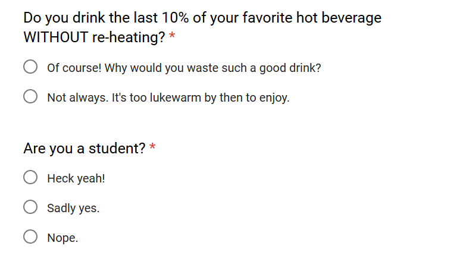
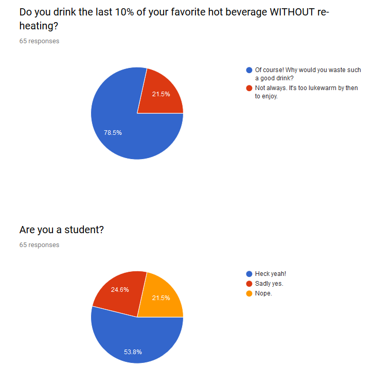

The questions no one cares about, but everyone's wondering
The question was:
And like all of these questions, I had very personal reasons for wondering this. I will now publicly admit, for the first time in my life, that I, Omar Sameh Mahmoud Ahmed Shehata, do indeed never drink the last 10% of coffee.
This has been something that has always perplexed my girlfriend. She couldn't understand why I was always wasting so much coffee. "Why not just get less coffee?" she'd ask, as if it was so simple. I shared my dilemma with those closest to me, and no one could understand. "Why wouldn't you just drink it all?" they'd say, as if it was somehow my fault. As if this was just some silly quirk.
I felt like an outcast. Alone. Wondering if anyone out there in the world (or at least on campus) could understand what I had to go through.
You can see this in the way I asked the question. I was rather apologetic in my phrasing. I didn't even realize this until a supportive friend came up to me and said that my survey was missing a response. I had "Of course, I always drink it" and "I don't always drink it", but I didn't have a "I never drink it". She proudly proclaimed that she never drinks the last 10%, and she is not afraid to say it.
I was in awe.
It turns out I was not alone after all. By my calculation (stats majors, avert your eyes, I'm breaking all rules of statistical signifiance) there's at least 1000 students on campus right now who don't always drink the whole thing.
You might be wondering why I included the second question. I was mostly just wondering how many people who take this survey are non-students. I did not expect to find a different pattern among staff vs students. I chose to show the results as a stacked bar chart though, because something quite misleading happens when you look at the data as a pie chart.
This was the default Google forms summary display:
Do you see the coincidence? This summary implies that there's some connection between not finishing your coffee, and not being a student! They're the exact same number of responses! Of course, that doesn't mean that everyone who said they aren't a student also said they don't finish their coffee. The numbers just happened to line up that way. I was a bit dissapointed this wasn't the case (think of the scandelous headlines we could have had).
Now why did I give a yes or no question 3 answers? If you asked me that while we walked towards each other going in opposite directions on our way to our classes in the hallway, I'd say "It's more fun that way!" before breaking eye contact and walking briskly away.
The longer answer is that this was really important to me. Every other survey had a blank space where you could write a custom answer. It was a chance to express yourself, and I'd often discover or learn things I'd never thought of. Most surveys don't have this, because it means analyzing the data is harder. I wanted to give people at least some sense of expression.
So today we learned that most St. Olaf students are pretty okay with being students.
And if you don't always finish your coffee, you are not alone in this world. There is nothing wrong with you, no matter what they say.
– Omar